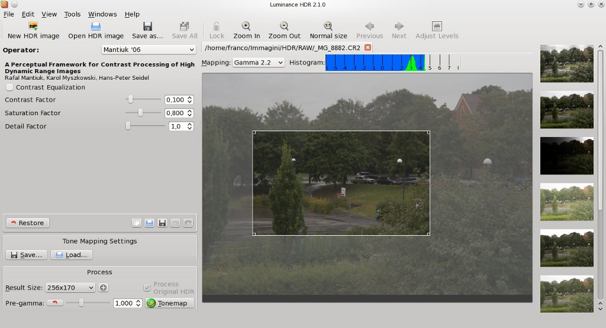

After creating an new HDR file or opening an existing one you can do several things to them except tonemapping.
You can access this feature via the Image > Resize the Hdr... menu item.
Luminance HDR can resize an HDR image to a given pixel size of percentage value counting from the original. If you use percentage, thi final size in pixels will be calculated and displayed to the right from Height entry field.
Clicking Scale button will resize the HDR image.
To crop an HDR file to some area first you need to select this are. Click somewhere on an image, drag the mouse pointer to a side and release it. You will see something like this:

You can further edit the frame you created by dragging its edges or corners. You can also move the frame around by clicking inside it and dragging mouse pointer (that will change from an arrow to a hand icon).
When the frame is placed correctly, choose Image > Crop to selection in menu or use the relevant button in the toolbar. Luminance HDR will create a new unsaved HDR image that contains cropped version of the original image.
To get rid of the selection frame simply single-click anywhere outside the frame or use the Image > Remove Selection menu item.
You can rotate an HDR image to 90 degrees a step, using Image > Rotate Counter-Clockwise and Image > Rotate Clockwise commands or < and > shortcuts respectively. Unlike setting an Exif orientation tag this will physically modify the HDR image.